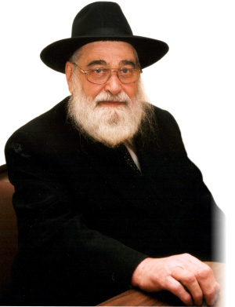

Remembering the Chassidic Martyrs of Riga
One of the outstandingly beautiful Chabad communities of days gone by was in Riga, Latvia before the Holocaust. The Latvian Lubavitch community had many Chassidic personalities of note, many of whom were killed by the Nazis. One survivor of that community, R’ Uri Nosson Nota Barkahan, shared his reminiscences about the glory days. * Presented for the Nine Days, a calamitous period for our people. * Part 1 of 2

This all ended when the Communists took over Latvia and began their religious persecution. One year later the Nazis conquered Latvia and finished the job. The magnificent community was obliterated. Men, women and children, were annihilated. Only a handful survived.
R’ Uri Nosson Nota Barkahan a”h, known as Notke, was born and raised in a Lubavitcher family in Riga. He survived the Holocaust and together with other Chassidim he reestablished the Chabad k’hilla after the war. In 5729/1969 he moved to Eretz Yisroel. Twenty years later, in 5749, he returned to Riga as a shliach of the Rebbe to serve as the chief rabbi of Latvia. The Lubavitcher most identified with Riga in recent years until his passing almost ten years ago was R’ Notke.
Ten years ago, R’ Barkahan was interviewed by Beis Moshiach about his memories of the Chabad community in Riga.
THE EARLY YEARS
R’ Notke was born in Riga in 5683/1923. His father was R’ Alexander Zusman Barkahan. The family had Chassidic roots. His paternal grandfather was R’ Yeshaya Barkahan, a Chassid of the Tzemach Tzedek, and his maternal grandfather was a Chassid of the Rebbe Maharash.
Until age 4 R’ Notke learned in the local school and then he went to the Torah V’Derech Eretz school run by R’ Chaim Mordechai Isaac Chadakov.
R’ Notke has many memories of life in Riga. He chose to begin with the most important one of all:
“After the arrest and release of 1927, the Rebbe Rayatz left Russia and moved to Riga. I was five years old at the time. Throughout the time he lived in Riga, I went to see him seven times, at t’fillos and farbrengens, and I also had yechidus along with my father. It’s a pity I was too young to remember those important events.
“In my childhood, the Lubavitch community in Riga consisted of many dozens of families. They were scattered throughout the city as well as the surrounding suburbs. I remember Elijas Street where there was a long building with three “Russian minyanim,” the various Chabad minyanim: the minyan of Chassidei Kopust, the minyan of Chassidei Liadi, and the minyan of Chassidei Lubavitch. The latter was also the center for Lubavitcher Chassidim in Riga.
“There was another Chabad minyan in the shul on Marijas Street, which was called “the Berg’s Bazaar Minyan.” R’ Mordechai Dubin, the well-known askan and member of the Sejm, the Latvian Parliament, davened there. In my childhood, I davened in the Rogatchover shul (in those days, the Rogatchover Gaon did not live in Riga though the shul was named for him).
“Farbrengens were a time for everyone to get together. That is when I would see the Chassidim and their children. Every Motzaei Shabbos there would be a Melaveh Malka meal. Many of the Chassidim would gather in one of the homes and farbreng.
“Yud-Tes Kislev was a holiday in Riga. There would be farbrengens in all the shuls, including those that were not Chabad. Afterward, they would all come to the main shul of the Russian minyanim. The main one leading the farbrengen was the famous Chassid, R’ Itche der Masmid (when he wasn’t in town R’ Mordechai Cheifetz would farbreng). In general, R’ Itche der Masmid led all the farbrengens.”
When R’ Notke tells all this, you could see that he is in a different world. Tragically, most of the community was murdered by the Nazis along with the rest of Latvian Jewry, may Hashem avenge their blood.
THE GREATS OF RIGA
It was like R’ Notke took me along with him and gave me a tour of the Lubavitcher beis midrash in Riga. Together, we went from bench to bench and from table to table, as he mentioned the names of well-known Chassidim who were glorious figures in the world of Chabad:
“I can still visualize R’ Refael (Fole) Kahn of Germanovitch, may Hashem avenge his blood, my brother’s father-in-law, who was the rav of the k’hilla and one of the three chief rabbis of Riga. The Nazis took him along with the others and put a Torah scroll in his hands and set them on fire.
“I remember R’ Mordechai Cheifetz, may Hashem avenge his blood, one of the leaders of Achos T’mimim, and R’ Yechezkel (Chatshe) Feigin, may Hashem avenge his blood, the Rebbe Rayatz’s secretary. I can see in my mind’s eye, the Chassid, R’ Itche der Masmid. There were other great Chassidim like R’ Eliyahu Chaim Altheus, also a leader of Achos T’mimim, R’ Avrohom Eliyahu Asherov, R’ Yechezkel Himmelstein, may Hashem avenge his blood, who served as the mashgiach in Tomchei T’mimim in Lubavitch, R’ Tzvi Gor, may Hashem avenge his blood, who was a baal t’filla with a sweet voice that inspired everyone with his fervor, R’ Shimon Bliner, may Hashem avenge his blood, the grandson of R’ Michoel der Alter the mashpia in Tomchei T’mimim in Lubavitch and R’ Michoel Pizov a”h.”
Riga had numerous Chassidim, scholars, baalei avoda and men of stature. R’ Notke described these picturesque people who gave Riga the feeling of a shtetl:
“There was a Chassid, R’ Yisroel Moshe Friedman, who would daven until three in the afternoon and then go about his business.
“Then there was R’ Zalman Yitzchok, who was blind. He would come to shul accompanied by one of the Chassidim and they would sit down together to learn. The Chassid would read from the Gemara and R’ Zalman Yitzchok would correct him even if he erred with one letter.
“I remember R’ Mendel the Baal HaLekach’lach. I don’t know his last name because that’s what they called him. He was called that because he would go to shul to daven vasikin. His wife would bake cookies which he would put in a basket in a corner of the shul. When someone finished davening, he would take a cookie and leave a coin on a plate. In the meantime, R’ Mendel would begin davening with the vasikin minyan and his davening took a long time. After davening, he would learn his daily quotas, then daven Mincha at two o’clock and only then go home.
“Among the Chabad askanim in Riga was the famous Chassid R’ Mordechai Dubin. He was a fervent Chassid who helped thousands of Jews. Many of them voted for him in the elections to the Latvian Parliament as a token of their appreciation for his dedicated communal work. When the Soviets occupied Latvia they exiled him. He died in 1956.
“The bachurim who learned in Tomchei T’mimim in Lubavitch were special. Wherever they went, they generated a Chassidishe atmosphere.”
R’ Notke described learning in R’ Chadakov’s school:
“There were hundreds of students and the building was five stories high. The teachers were all G-d fearing and many were Chabad Chassidim. The goal of the hanhala was for the talmidim to learn in yeshivos, and if not, at least to be G-d fearing.
“R’ Chadakov had a unique educational philosophy. In my opinion, he did not change from when I knew him until his final day. His principles were like steel and this is how he trained the teachers. The discipline and integrity that he demanded of the teachers he first demanded of himself. This is why, despite his exacting standards, they all loved him. They knew that what he demanded of them, he truly did himself.
“Decades later, he still maintained contact with all his previous students. I thought this was incredible as he was a very busy person. How did he find the time? I once asked him and he said, ‘I do it as the Torah says, “one who teaches his friend’s son Torah is like he gave birth to him.” If the relationship is not like that, you need to know that the learning wasn’t done properly.’
“R’ Eliyahu Chaim Altheus was the first one to teach me Chassidus, even before I learned in a Chabad yeshiva (in Riga there was no Chabad yeshiva and I attended a yeshiva that was not Chabad). It was only when my brother Yeshaya Chanoch became a rav in Gostina that I began learning in Yeshivas Tomchei T’mimim in that city.
“This yeshiva was under the supervision of the rosh yeshiva, R’ Hillel Gurevitch, the son of R’ Itche. The mashpia was R’ Yechezkel Himmelstein. We were thirty-five talmidim. Most of the talmidim perished in the Holocaust.”
When I asked R’ Notke to tell me about the yeshiva, it was hard for him. He said it was difficult to talk about a yeshiva where most of his friends were brutally murdered.
FIRST CAME THE RUSSIANS
The summer of 1940. According to the treaty made between the two dictators, Hitler and Stalin, the Red Army took control of Latvia without a fight. In the so-called elections that took place afterward, the communists won and Latvia became another state in the Soviet Union.
A short while later, the confiscation of property and the purging of anti-communists began. Within a year, 35,000 citizens were killed, expelled or fled, including many Jews.
“After the communists took over Riga they began closing shuls, yeshivos and chadarim. Our yeshiva was also closed. The political situation was complicated. On the one hand, the communists did not wage all-out war on religious Jews; on the other hand, they exiled many Jews, including Chabad Chassidim, to labor camps in Siberia.”
The Rebbe Rayatz asked the T’mimim to escape Riga for India or China (both were under Japanese rule). Two groups crossed the border into Vilna where they got visas for India and China from the Japanese consul. However, when they were about to leave Vilna, their train received a direct hit and most of them were killed.
“I also tried to leave with R’ Shmuel Gurevitch, but we were caught on the border. We were released a few days later with the help of R’ Mordechai Dubin.”
THEN CAME THE HUMAN BEASTS
In Sivan 5701, the Nazis arrived at the border of Latvia and, contrary to their agreement with Stalin, they invaded the country. In the days prior to the conquest, a mass exodus of citizens took place. They boarded trains to escape deep into Russia and other republics of the Soviet Union.
The Chassidim argued about which was preferable, communism or fascism. There wasn’t clear information yet about the extermination of the Jews by the Germans in every country they conquered. The Jews in Latvia knew that fascist Nazis hated Jews, but communists did not allow people to observe mitzvos and they persecuted Chassidim and sometimes killed them.
“Some said that they must escape so as not to fall into the hands of the Nazis; some Chassidim said that escaping into the Soviet Union was no salvation but further trouble since the communists persecuted Jews. Among those who sided with staying in Latvia were R’ Itche der Masmid, R’ Fole Kahn and many others.”
(A letter of the Rebbe Rayatz was smuggled to Leningrad in which he wrote that they should escape even into communist Russia. The original intent was for Chassidim in the Baltic countries including Latvia and Poland, but the letter apparently did not reach Latvia. – SZB).
“My family and I boarded the second to last train. We waited for hours until it left. That is how we were saved from death in Riga and became refugees.
“After an exhausting trip we arrived at a kolkhoz that was 300 kilometers from Moscow. We lived there for a few months in which we suffered greatly, physically and spiritually. Later on, when the Germans began bombing the area, we fled to Samarkand in Uzbekistan, knowing that many Chassidim had gone there.”
MASS STARVATION
“Much has been said about Chabad Chassidim in Samarkand during the war years. However, I would like to discuss one important point.
“During the war, people starved. Every morning and evening, large wagons went through the streets to collect those who died of starvation. It was a frightful sight. Many Chassidim died too, of starvation and disease.
“I remember a Yud-Tes Kislev farbrengen in the home of R’ Shmuel Itche Reitzes. The Chassidim farbrenged for hours and seemed to forget the war and starvation. There were no tables, and as for eating and drinking, there was nothing to talk about. But there was Chassidishe warmth and this gave Chassidim the strength to go on.
“Suddenly, news arrived that the daughter of R’ Asher Sasonkin had died. A short while later, R’ Yisroel Levin was told that his wife had died. Nevertheless, they continued farbrenging with the main topic being supporting Tomchei T’mimim.”
RIGA, LATVIA
Latvia is one of the three Baltic states of Estonia, Latvia and Lithuania. It is bordered by the Baltic Sea, Russia and White Russia, and is in the northeast of the former Soviet Union.
The capitol Riga lies at the mouth of the Daugava River.
Under the czar, Riga was outside the Pale of Settlement. Jews could not live there unless they were rich or had special occupations. Among those who were allowed to live in Riga in those days were two Chassidim of the Alter Rebbe. This is because they were doctors: R’ Avrohom the Doctor and R’ Itzele Doctor.
Latvia, which was an independent country, was conquered by Russia a year before World War II. During the war, it was captured by the Nazis who murdered the Jews. At the end of the war, it reverted back to Russia.
After perestroika, Latvia became independent once again.
Berger. "Remembering the Chassidic Martyrs of Riga." Beis Moshiach, no. 887 (July 11, 2013).